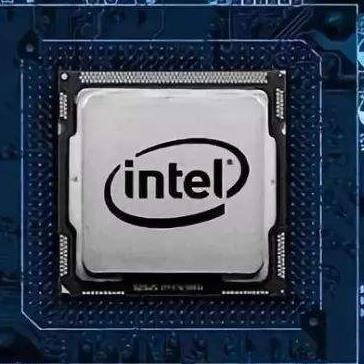
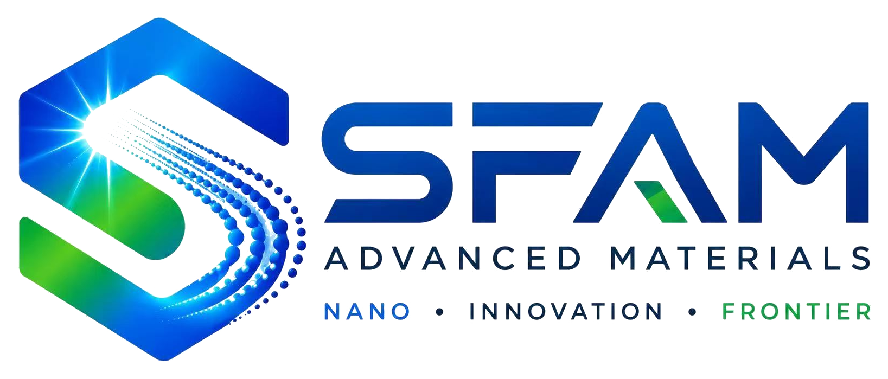
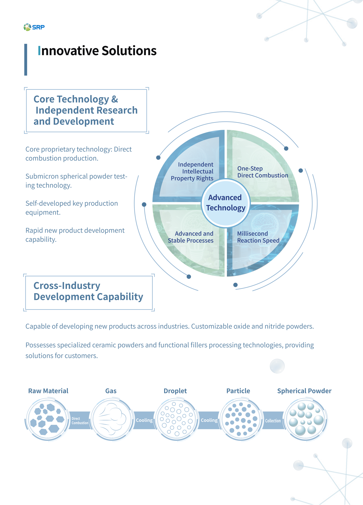

半导体封装
Low-alpha 氧化铝和高纯氧化硅可用于对杂质、电导率和粒径控制要求严格的封装体系。

应用
SRP 球形粉体服务于电子封装、导热管理、CCL、EMC、铝基覆铜板粘接片、先进陶瓷、工程塑料、涂料和定制化功能填料体系。
| 行业方向 | 应用示例 | 相关粉体平台 | 价值说明 |
|---|---|---|---|
| 电子领域 | 电子封装填料和树脂体系 | SP 球形氧化硅、LA low-alpha 氧化铝 | 支持杂质控制、粒度分布控制和树脂相容性。 |
| EMC | 半导体封装用环氧树脂模塑料 | SP3/SP4 氧化硅和 LA 氧化铝 | 兼顾低电导、低 alpha 和填料流动性要求。 |
| CCL | 覆铜箔层压板填料体系 | SP3 和 SP4 球形氧化硅 | 适用于需要粒径控制和稳定填充率的介电材料体系。 |
| 铝基覆铜板 | 铝基覆铜板粘接片和半固化片层 | 球形氧化硅和氧化铝填料选项 | 支持粘接层的导热、力学和加工性能需求。 |
| 功能填料 | 树脂、塑料和复合材料中的通用填料体系 | 表面改性氧化硅和氧化铝 | 可通过表面化学和粒径调节相容性与填充率。 |
| 工程塑料 | 填充改性塑料复合物 | SP 氧化硅和定制表面处理牌号 | 改善填料分散、加工性和性能调节空间。 |
| 涂料 | 功能涂料配方 | 亚微米球形氧化硅 | 为涂料性能设计提供可控球形填料平台。 |
| 陶瓷 | 陶瓷膜、透明陶瓷和烧结陶瓷部件 | DC 和 DCS 球形氧化铝 | 高纯度、高球形率和亚微米控制支持成型与最终性能。 |
| 应用领域 | 相关牌号或配方 | 应用描述 | 体现的能力 |
|---|---|---|---|
| 导热填料与 TIM | DC3-U 配合 5 微米、40 微米球形氧化铝 | 示例配比由硅油:5 微米:40 微米 = 1:3:6，调整为硅油:DC3-U:5 微米:40 微米 = 1:1:3:6。 | 提升流动性、氧化铝填充率、导热率和填充性能，并帮助降低热阻。 |
| 高填充导热体系 | DC3-M；10 微米:0.2 微米 = 8:2 | 大小粒径合理搭配，小颗粒填充大颗粒间隙；资料示例为硅油:DC3-M = 1:6。 | 体现通过粒径级配实现高填充和降低传热阻力的设计能力。 |
| 陶瓷过滤膜 | DC3-S | 用于陶瓷过滤膜应用方向。 | 体现亚微米球形氧化铝在陶瓷膜成型中的粒径和形貌控制能力。 |
| 透明陶瓷 | DC3-F / DC4-F | 面向透明陶瓷的注射成型和流延成型路线。 | 亚微米粒径有利于小晶粒；球形颗粒有利于高固相和高流动性；高纯度有利于高透光率。 |
| 陶瓷手机背板 | DC3-U | 可作为陶瓷手机背板体系中的氧化铝粉体选项。 | 面向轻量化、抗跌落和高硬度陶瓷结构件。 |
| 蓝宝石单晶 | DC4-U | 用于蓝宝石单晶原料方向。 | 高纯度和易装炉特性支持晶体生长前处理。 |
| 烧结陶瓷结构件 | DCS 易烧结氧化铝 | 资料列出了纺织陶瓷、医疗陶瓷和陶瓷结构件等方向。 | 体现致密烧结能力，资料中烧结密度可达到 3.9 g/cm3 以上。 |
| 其他列举应用 | DC 氧化铝和 SP 氧化硅平台 | 包括锂离子电池隔膜、ZTA 陶瓷、陶瓷 3D 打印、工程塑料、涂料、EMC、CCL 和铝基覆铜板粘接片。 | 说明产品组合覆盖热管理、电子材料、陶瓷成型和功能填料等多个市场。 |
Low-alpha、高纯和亚微米氧化硅/氧化铝产品适用于对杂质控制、粒径稳定性和填料行为要求严格的封装体系。
环氧树脂模塑料体系可采用球形氧化硅和 low-alpha 氧化铝，以满足粒度、电导和放射性杂质控制要求。
球形氧化硅产品可用于覆铜箔层压板配方。
LA 氧化铝面向 HBM 和 LPDDR 封装场景，重点控制 U+Th 和金属杂质。
亚微米球形氧化铝可与微米级球形氧化铝配合使用，改善 TIM 体系的填料堆积、流动性、导热率和热阻表现。

高纯球形氧化铝在粒径、形貌、纯度、流动性和烧结行为影响最终性能的陶瓷应用中具备价值。
| 应用 | 相关材料 | 材料优势 |
|---|---|---|
| 陶瓷过滤膜 | 高纯球形氧化铝 | 亚微米粒径和高球形率有利于陶瓷膜体系设计 |
| 透明陶瓷 | 亚微米球形氧化铝 | 亚微米粒径带来更小晶粒，球形颗粒提高固相和流动性，高纯度有利于透光率 |
| 蓝宝石单晶 | 高纯氧化铝 | 纯度高、易装炉等优势 |
| 烧结陶瓷部件 | DCS 易烧结氧化铝 | 面向致密烧结行为，源表格列出烧结密度 >3.9 g/cm3 |
球形氧化硅也可用于非封装填料体系，帮助调节树脂相容性、流动性、粒径分布和表面处理效果。
SP 系列氧化硅可通过粒径和表面改性适配填充率与加工相容性需求。
亚微米球形氧化硅可作为可控球形填料平台用于涂料配方。
SRP 具备专用陶瓷粉体和功能填料加工技术，可按客户需求开发氧化物、氮化物等粉体方案。